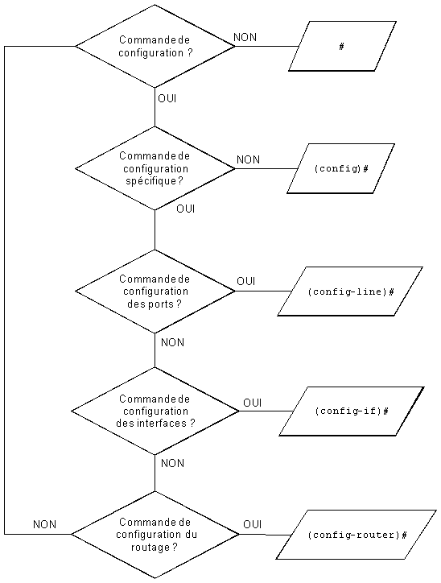
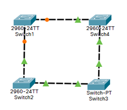
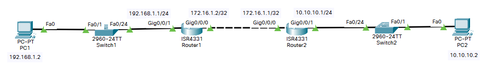

#
Étiquette: tuto
Voir tout étiquettes.

Réseaux • Cisco
🛡️ La Hiérarchie du CLI Cisco
Explication de la structures des modes qui composent le CLI CISCO.
2022-09-14
Réseaux • Cisco
🔎 Aide, autocomplétion, monitoring, raccourcis
Informations et tips relatifs au CLI CISCO.
2022-09-14

Réseaux • Cisco
🔌 LAYER 2: Vlan, Spanning-tree, Trunk, ÉtherChannel et Encapsulation dot1Q
Ensemble des fonctionnalités les plus utilisées de niveau 2, sur équipement CISCO.
2022-09-14

Réseaux • Cisco
📡 LAYER 3: Routage statique, RIPv2 , OSPF, NAT
Ensemble des fonctionnalités les plus utilisées de niveau 3, sur équipement CISCO.
2022-09-14
Réseaux • Cisco
📤 Accès distants
Les accès distants sur équipements CISCO.
2022-09-14